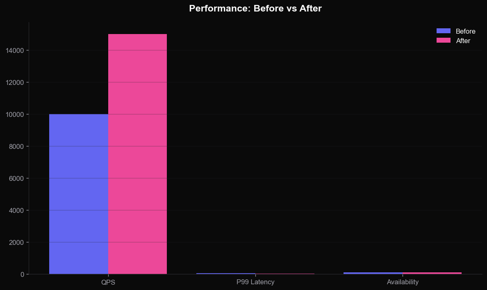
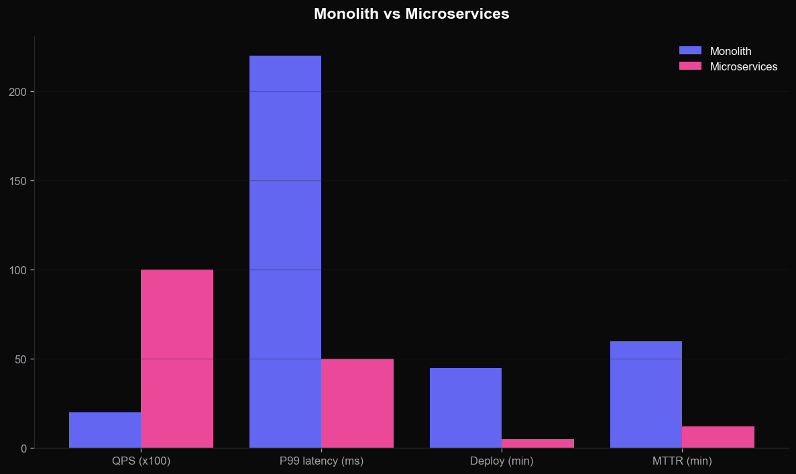
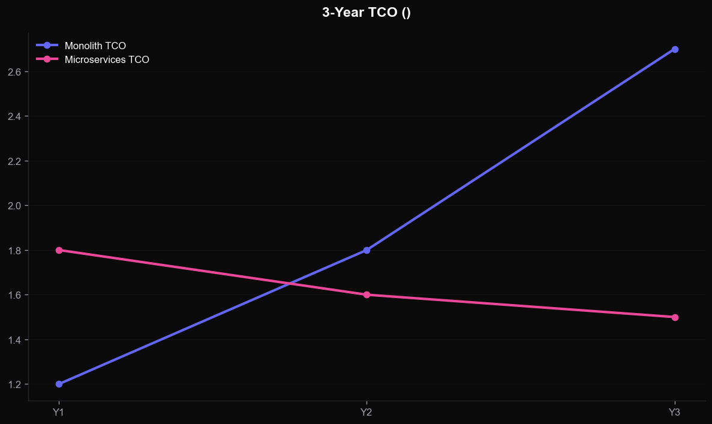
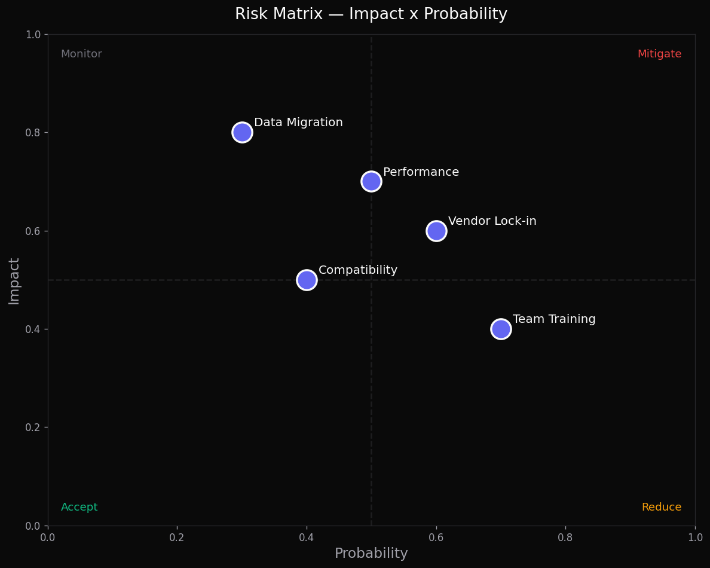

从单体到云原生：可扩展、高可用、可维护的下一代架构
单体瓶颈、扩展性挑战
微服务、技术选型
QPS / 延迟 / 可用性
零信任、CI/CD
风险矩阵、时间线
行动项、下一步
| 维度 | MySQL（旧） | PostgreSQL（新） | MongoDB |
|---|---|---|---|
| 事务一致性 | 强 ACID | 强 ACID + MVCC | 文档级 |
| 水平扩展 | 分库分表 | 分区 + Citus | 原生分片 |
| JSON 支持 | JSON 列 | JSONB（强） | 原生 |
| 团队熟悉度 | ★★★★★ | ★★★★ | ★★★ |
| 运维生态 | 成熟 | 成熟 + 扩展生态 | Atlas |
| 推荐用途 | 历史遗留 | 交易主库 | 日志/事件 |
原生多版本并发控制，长事务不阻塞读，金融级一致性保障。
订单元数据可同时享受关系建模与文档灵活性，避免双数据库。
Citus 水平分片、TimescaleDB 时序、pgvector 向量检索一站到位。
声明式分区 + 并行执行，支持单库轻松扩展到 10TB。
PostgreSQL 全球社区，无单一厂商绑定，云厂商一致支持。

所有微服务无状态，K8s HPA 基于 CPU + RPS 自动扩缩
主库写入，多副本读取，热点数据 Redis 缓存
Kafka 削峰填谷，跨服务事件最终一致性
关键服务双环境切换，秒级回滚
基于 Argo Rollouts 自动化金丝雀
LaunchDarkly 控制功能开关
CI/CD: GitHub Actions → ArgoCD → K8s · 平均部署时长 < 5 分钟


| 风险 | 影响 | 概率 | 缓解措施 |
|---|---|---|---|
| 分布式事务复杂度 | 高 | 中 | Saga 模式 + 事件溯源 |
| 数据迁移失败 | 高 | 低 | 双写 + 影子比对 |
| 团队技能差距 | 中 | 中 | 培训 + Pair Programming |
| 运维成本上升 | 中 | 高 | SRE 团队 + 自动化 |
| 服务间依赖混乱 | 中 | 低 | 服务目录 + 依赖审查 |
| 供应商依赖 | 中 | 中 | 多云策略 + 抽象层 |

K8s · CI/CD · 可观测性
M1-M2
Auth · Notification
M3-M4
Order · Payment
M5-M6
双写 · 切流
M7-M8
清理 · 复盘
M9
QPS 5x / 延迟 -75% / 可用性 99.99%
部署频率 10x / MTTR -80%
用户流失 -2pp / GMV +15%
通过 9 个月的渐进式微服务迁移，Acme 平台将从单体瓶颈中解放，实现 5 倍 QPS 提升、延迟降低 75%、可用性达到 99.99%。建议本周启动 Phase 1。
terry@acme.com · #platform-arch